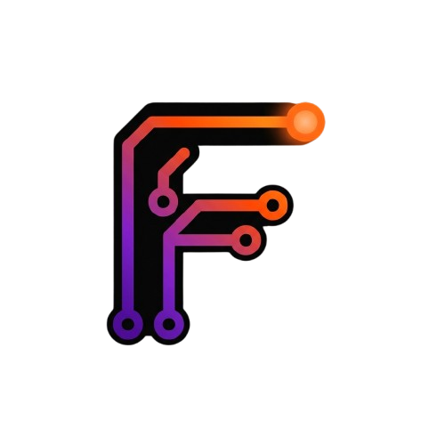

Web Apps
StudyFlow
A calm, simple dashboard for organising study sessions and keeping weekly goals in view.

Fardin Islam FuadOPEN TO LEARNING & COLLABORATION
I’m Fardin Islam Fuad — Computer Science and Technology student.
I’m a diploma-level CST student who enjoys turning curious ideas into useful little projects. I build for the web, practise problem solving, and learn something new with every iteration.
A FEW THINGS I’VE MADE
A calm, simple dashboard for organising study sessions and keeping weekly goals in view.
A student notice-board prototype for sharing campus updates and useful links.
A tiny personal expense tracker that turns daily entries into a clear monthly snapshot.
TOOLS I’M EXPLORING
A growing toolkit, one project at a time.
Good ideas start small. A little more about me